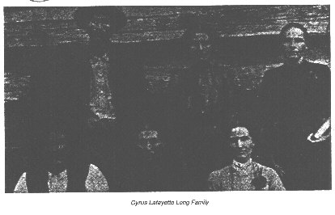

+ Elizabeth Jones b: in North Carolina
2 Nancy Emaline Long b: December 20, 1829 in Burke County,
North Carolina d: July 05, 1902 in Yell County, Arkansas
+Nelson Damon Ash b: October 11, 1831 in Haywood County,
North Carolina d: November 10, 1917 in Yell County, Arkansas
2. Reefe LONG (male) md. Nerva HOLDEN
2. Lucinda "Cindy" LONG b 1831 md. James SANFORD
2 Margaret LONG b 1833 md. BOYD WILSON
2 John LONG b 1835
2 James Calvin "Jim" LONG b 1826 md. 1866 Rhoda
HOLDEN
3 James Calvin Jr., md. (1) Della F. DAVIS (2) Ella RACKLEY
2 William LONG b 1839
2 Louisa Jane LONG b 1840 md. Levi BROOKSHIRE
2 Riley LONG b 1842 md. Rachel A. WADDELL
3 Lester
3 Lissie md. Barney MATHIS
2 Levi LONG b 1843 NC
2 Martha Snow LONG b 1845 GA md John HOLDEN
2 Sarah LONG b 1848 GA md. Robert Willis WOODY
2 Cyrus LaFayette "Fate" LONG b March 9 1847 GA
Died July 5 1925 md. Jane Elizabeth BROOKSHIRE

Dates for this family provided by Floyd Long -Email: f7903@aol.com
Data also available from Georgia Cummons Email: cummons@bellsouth.net
3 William LONG b Dec 29 1870 d Jan 29 1871
3 John Wilburn LONG b. Sept 7 1870 d. Sept 1 1956 md. Mary
Anna GARRETT,
3 Nancy Elizabeth LONG b Nov 5 1875 died Dec 13 1947 md.
Luther MULKEY,
3 Martha Jane LONG b. Oct 7 1878 d March 12 1960 md.
(1) William BLILES (2) Robert A. KIMSEY
3 James Cyrus LONG b Aug 25 1881 d July 3 1968 md.
Rosalie BURNETT
3 Mary Catherine LONG b Aug 10 1884 d Sept 6 1971 md. Willie
Wesley JETER,
3 Levi LONG b Sept 18 1887 d March 1 1978 md. (1) Anne
Belle CLAYTON (2) Eva DAY (3) Ardell BLAIR
2 Rebecca LONG b 1850 md. (1) Benjamin Webb CHASTAIN (2)
John HOLDEN